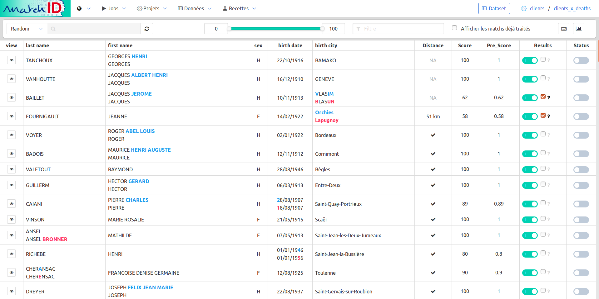
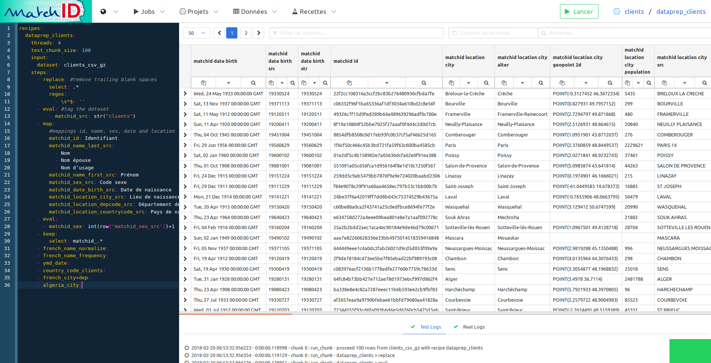
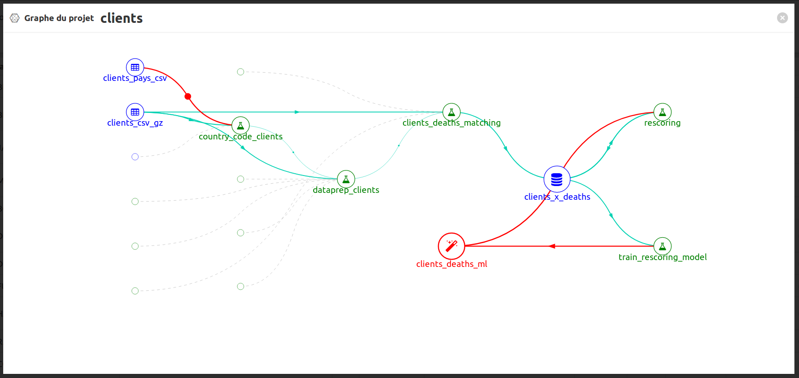
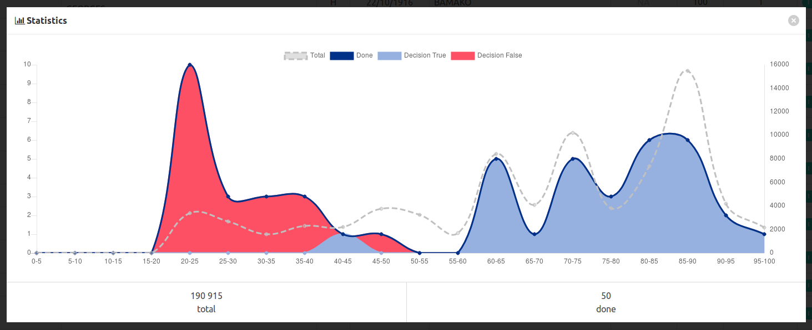
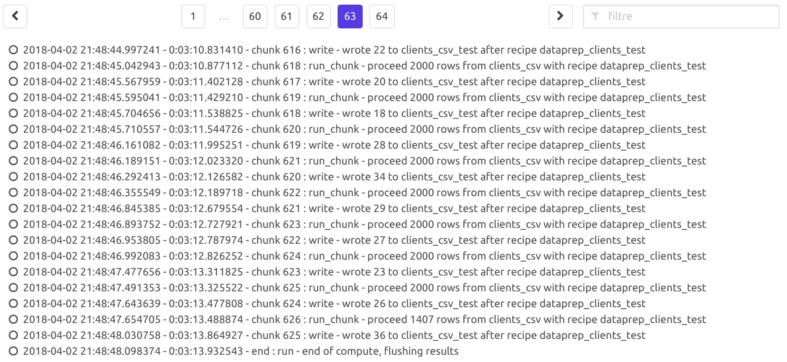

# Vue.js ### développements progressifs Fabien Antoine<br> data scientist
## missions du MI - relation **état/collectivités** : intégrité des institutions, libertés locales - **sécurité des citoyens et des biens** : libertés publiques (suffrages), risques et fléaux (sécurité intérieure, sécurité civile, sécurité routière ...)
## (data-)lab au MI - accélération d'usage innovants (idéation, hackathons, POCs, ...) - évangélisation tech (opendata, API, dataviz, datascience, ...)
## accompagnement projets innovants - EIGs (cartAV, matchID, previsecours, puis IA Flash) - Start'up (Histovec, Polex) - FTAP (l'entrepôt, puis CTFIA)
## APIful & front au MI - premier pas 2014 (SI Asile : Angular 1/Python 2) - plus de 50% des nouveaux projets utilisent des techno front : Angular 2 (Si Accident), React (Contrôle Frontière)
#### accélérer les itérations alpha/bêta - mock-up JQuery - alpha/bêta: backend-less Vue/React, nginx, elasticsearch, docker - ajout progressif de backend (python, node)
#### Travaux - cartAV: mock-up leafleat/jquery puis POC Vue - matchID (validation) : mock-up DSS/Jquery puis POC vue puis appli Vue/python - previsecours: mock-up DSS/Jquery, puis POC Vue (en cours) - histovec: mock-up Bootstrap, puis POC Vue.js
Cas d'usage n°1 <br/> <img width="600" src="img/cartav.svg"><br/> **géodécisionnel**<br/> <small> croiser les données d’accidentalité avec les données de verbalisation <br>pour réaliser un outil de cartographie décisionnelle </small>
<img width="300" data-src="img/eig_logo.png" alt="EIG logo"> <br/><small>défi 2017</small> <iframe frameborder="0" width="800" height="448" src="https://www.dailymotion.com/embed/video/x5ciq09" allowfullscreen allow="autoplay"></iframe>
<img width="300" data-src="img/eig_logo.png" alt="EIG logo"> #### défi 2017 **croiser** les données d’accidentalité avec les données de verbalisation pour réaliser un outil de **cartographie** décisionnelle <br/> <br/> <small> accidents et verbalisation à **enrichir géographiquement** <small> (géocodage d'adresses, projection sur les routes)</small> <br/> <br/> pour permettre aux forces de polices de **mieux orienter les verbalisations** vis à vis des accidents </small>
#### réponse au défi #### avec Dataiku/DSS, Vue.JS/Elasticsearch <small> - DSS: géocodage avancé, injection Elasticsearch - Vue.js + leaflet : présentation des données </small> <img height=300 src="img/workflow-cartav.jpeg"/> <br/>
<img height="30" src="img/cartav.svg"><br/> <iframe width="854" height="480" src="https://www.youtube.com/embed/YXdVgf2px_I" frameborder="0" allow="autoplay; encrypted-media" allowfullscreen></iframe> <smal><small>réalisé avec Vue.js</small></smal>
Usage de Vue.js <small> - router/Vuex : synchronisation paramètrage des filtres / url - limites - intégration Leaflet: via Vuex, couplage lâche (zoom) - création d'un composant de géocodage leaflet : leaflet-geocoder-ban - aujourd'hui: vue2-leaflet (KoRiGaN)? à voir </small>
### Timing - juillet 2016: faisabilité (mock-up JQuery-leaflet 2 niveau geo) - 2 semaines - EIG (début 2017) première maquette Vue en 1 mois (4 niveaux, 2 jeux de données, polylines) - première expérimentation du prototype en 10 mois - généralisation en cours (12 mois)
### Bénéfices avec Vue.js - gestion de niveaux géographiques multiples - réactivité des filtres - courbe d'apprentissage (les 2 EIG débutaient en Vue, pas en Leaflet) - simplicité/rigueur (une vue, un composant, un fichier)
### Références <img height="30" src="img/cartav.svg"><br/> <small> - [CartAV sur GitHub](https://github.com/entrepreneur-interet-general/cartav) - [Géocodage BAN/Leaflet : package npm](https://www.npmjs.com/package/leaflet-geocoder-ban) - [ParcEpic, Francis Chabouis](https://medium.com/cr%C3%A9ation-dune-app-cartographique-avec-firebase-vue/cr%C3%A9ation-dune-app-cartographique-avec-firebase-vue-js-et-leaflet-868e9ea1b958) - [Korigan, composant Vue+leaflet / à tester](https://github.com/KoRiGaN/Vue2Leaflet) </small>
Cas d'usage n°2 <br/> <img width="600" src="img/matchID-logo.svg"><br/> **outil de dataprep/datascience pour fuzzy matching**<br/> <small> réconciliation d'états civils dans les bases étatiques </small>
<img width="300" data-src="img/eig_logo.png" alt="EIG logo"> <br/><small>défi 2017</small> <br/> <iframe frameborder="0" width="800" height="448" src="https://www.dailymotion.com/embed/video/x5ciua7" allowfullscreen allow="autoplay"></iframe>
<img width="300" data-src="img/eig_logo.png" alt="EIG logo"> #### défi 2017 le système des permis de conduire SNPC n’invalidait pas les permis des conducteurs après leur décès <small> - Quelle est la part de décédés au SNPC ? - Quelle est la quantité de retraits de points attribués à des personnes décédées ? - Y’a-t-il des délivrances de permis de conduire à des personnes décédées ? **Bonus** : Existe-t-il des personnes possédant plusieurs permis ? </small>
#### réponse au défi <small> - préparer et redresser la donnée INSEE (22M) et SNPC (56M) - croiser les bases de données avec des techniques de matching flou - attribuer un score de confiance à chaque réconciliation d’identités - itérer avec de l’apprentissage automatique </small>
<img height=500 src="img/workflow-matchID.png"/>
### Résultats - 30% de correspondances strictes - 66% avec normalisation simple <small>(trait d'union, un seul prénom)</small> - 95% avec matchID (point d'équilibre rappel/précision)
#### Comment - Résultats initiaux avec Dataiku/DSS + Elasticsearch - "Libération" du code: création de [matchID](https://matchid-project.github.io/) : Vue.js/Python-Pandas/Elasticsearch
#### matchID: la validation (ML) <br/>
#### matchID: la validation (ML) - POC DSS/jquery/Elasticsearch (slick-grid.js) - composant Vue.js autonome (+elasticsearch) - Puis développement du dataprep matchID (backend+front) / intégration de la validation
- limites: pas de vue-datatable acceptable - avantage: customisation progressive facile (template)
#### matchID: dataprep (codeMirror + custom table) <br/>
#### matchID: dataprep (codeMirror + custom table) - codeMirror: composant vue, intégration custom de certains plugins - datatable : custom nécessaire (contenus et colonnes filtrés par regex)
#### matchID: graphe des recettes (D3 + custom) <br/>
#### matchID: graphe des recettes (D3 + custom) - D3 : uniquement pour la structure graphe - vue très puissant pour le render svg (0% D3.js)
#### matchID: graphiques de résultats (chart.js + custom) <br/>
#### matchID: graphiques de résultats (chart.js + custom) - chart.js: facile à intégrer (plus complexe = css) - vue: nourrissement des données
#### matchID: streaming de logs (API sse + custom) <br/>
#### matchID: streaming (server stream event) - en Flask : court-circuit de FlaskRestPlus (bien formatter le SSE) - Vue: utilisation des classes natives JS: EventSource / addEventListener
### Bénéfices avec Vue.js - réactivité (y/c sans Vuex : uniquement messages parents/enfants + bus) - réaliser en apprenant - progressivité: maquettage/intégration/durcissement (refactos progressifs, y/c avec l'API)
Cas d'usage n°3 <br/> <img width="200" src="img/histovec_square.png"><br/> ** RGPD & backend-less **<br/> <small> achetez en confiance un véhicule d'occasion </small>
## véhicules d'occasion: des acheteurs abusés - vices cachés - réparations coûteuses - véhicules non assurables - 47 % de fraude dans les transactions de véhicules d’occasion – source DGCCRF, 2015
## méthode start'up - challenge hackathon: idéation et mock-up bootstrap (déc 2017) - équipe : mars 2017 - choix tech: Github+Vue.js+Elasticsearch (chiffrement AES256) - réalisation / homologation RGPD et mise en prod 2,5 mois
## bénéfices Vue.js - progressivité: facilité d'accès aux dev (initialement php) - implication du designer (itérativité) - intégration progressive (boostrap "standalone" => npm)
Cas d'usage n°4 <br/> <img width="200" src="img/previsecours_logo.png"><br/> **opendata et machine learning**<br/> <small> aider les sapeurs-pompiers à intervenir plus<br> efficacement avec des modèles prédictifs </small>
<img width="300" data-src="img/eig_logo.png" alt="EIG logo"> <br/><small>défi 2018</small> <iframe frameborder="0" width="800" height="448" src="https://www.dailymotion.com/embed/video/x6fp47d" allowfullscreen allow="autoplay"></iframe>
<img width="300" data-src="img/eig_logo.png" alt="EIG logo"> #### défi 2018 aider les sapeurs-pompiers à intervenir plus efficacement avec des modèles prédictifs <small> - modèle sur les volumes d’interventions et leurs géolocalisations pour anticiper les moyens à mobiliser - en partenariat avec les sapeurs-pompiers de l’Essonne - focus sur le secours aux personnes, puis les départs d'incendie </small>
**REPONSE AU DÉFI** <small> - données opendata : <small>INSEE population, ménages, scolarisation, IDH2, pollens, pollution, transports, calendrier, météo </small> - données d'intervention : ~ 90k / an - featuring et modélisation avec **Dataiku** - POC/webapp avec **Dataiku** puis Vue.js </small> <img height=180 src="img/interventions.png"/> <img height=180 src="img/opendata.png"/> <img height=180 src="img/featuring.png"/>
le workflow de prévisecours <img height=500 src="img/workflow-previsecours.png"/>
### Résultats en 1 mois - ROC AUC: 0.918 sans tweaking - POC visualisation <img height=250 src="img/mling.png"/> <img height=250 =200 src="img/map.png"/> [https://previsecours.fr](https://previsecours.fr)
### POC #### évolution des interventions par commune <iframe id="freshwidget-frame" src="https://algo.previsecours.fr/dip/api/webapps/view?projectKey=PRVISECOURSVISUALISATION&webAppId=W0kS5vF&apiKey=932QkDr6PUcppTtKPUfoDWlOM8BHhSz6" scrolling="auto" allowtransparency="true" style="height: 500px; width: 100%;" frameborder="0"> </div></iframe>
### Bénéfices avec Dataiku <small> - accélérer l'exploitation de l'opendata - tester l'impact des variables avec le machine learning - expérimenter l'usage prévisions avec les web app </small> pour le métier du secours <small> - premiers résultats en 1 mois - accès aux résultats en direct </small>
### Résultats avec Vue.js #### au ministère de l'Intérieur <small> - cartAV: géodécisionnel accidents/verbalisation - matchID: outil de réconciliation d'identités avec machine learning - histovec: ouverture sécurisée des données du véhicule - previsecours: prédictif interventions pompiers </small> avec : <small> - maquette amont (qq jours) - v0 en 1 mois (backend-less) - développeurs non initiés à Vue en amont </small>
### Bénéfices avec Vue.js <small> - progressivité - customisation - réactivité (bus, store, ...) - support communautaire </small>
### Points d'attention <small> - composants design (préférer bulma/bootstrap 4 à 3) : formulaire, accordéons, ... - niveau d'intégration js - leaflet, codemirror, datatable (inopportun) </small>
### Questions et contact [https://github.com/rhanka/vue-lll-2018](https://github.com/rhanka/) [fabien.antoine@m4x.org](mailto:fabien.antoine@m4x.org)